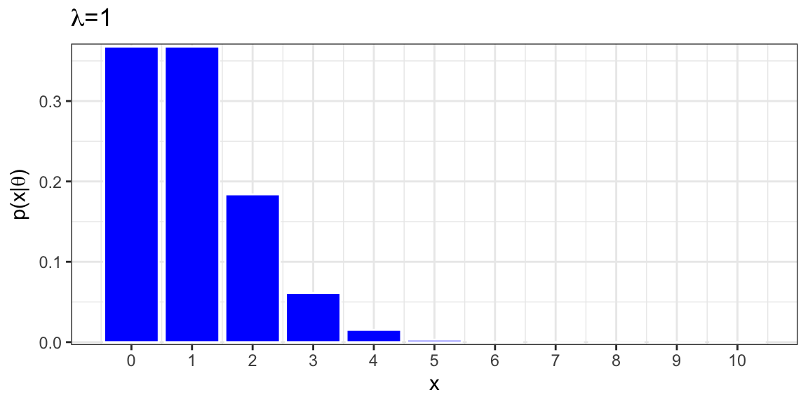
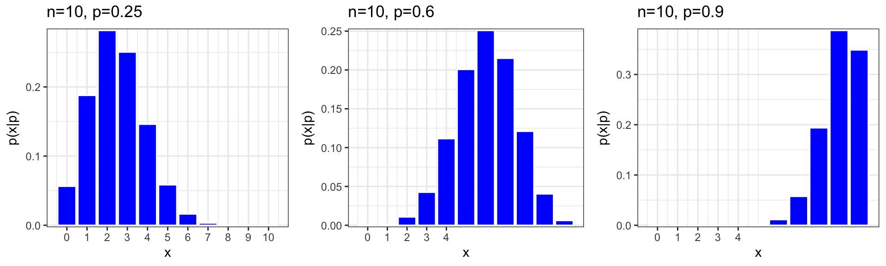
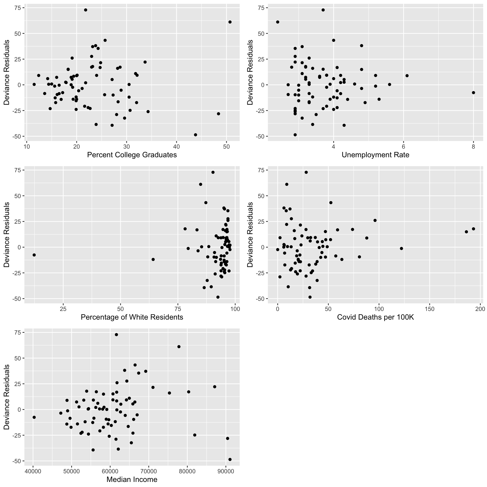
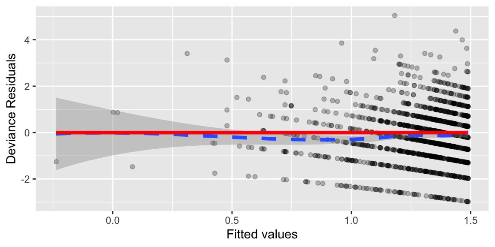
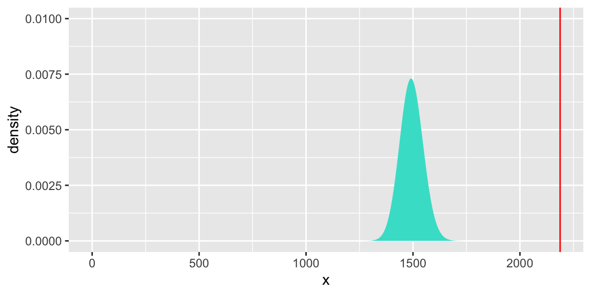
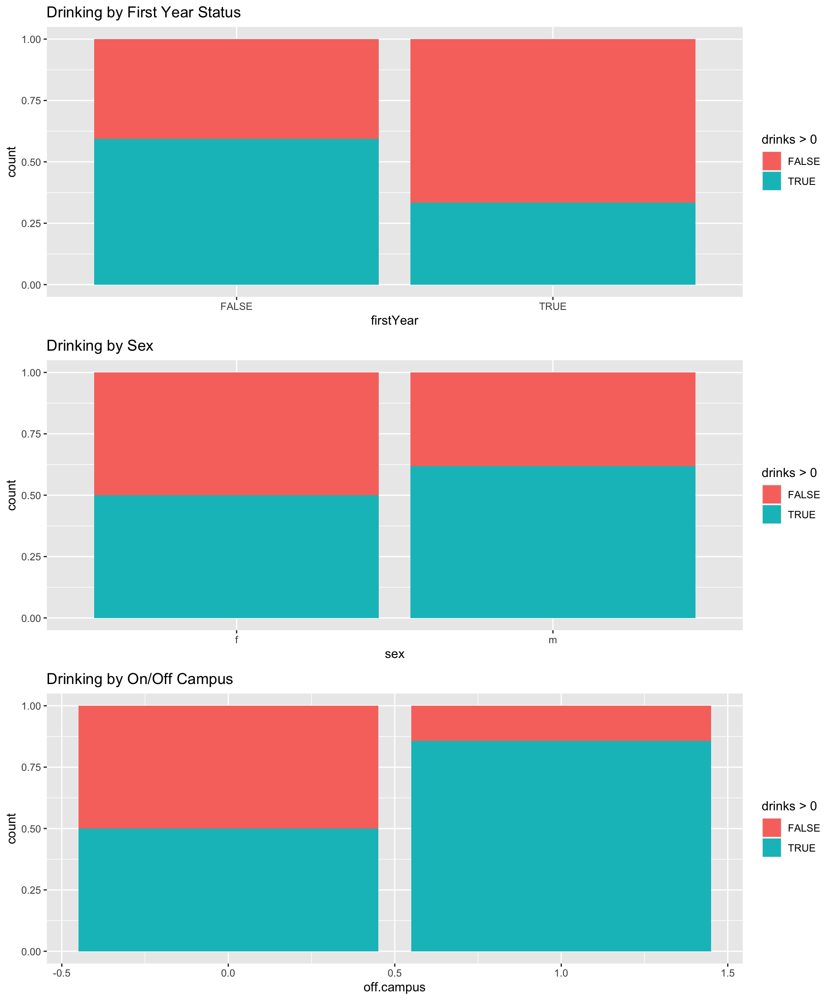
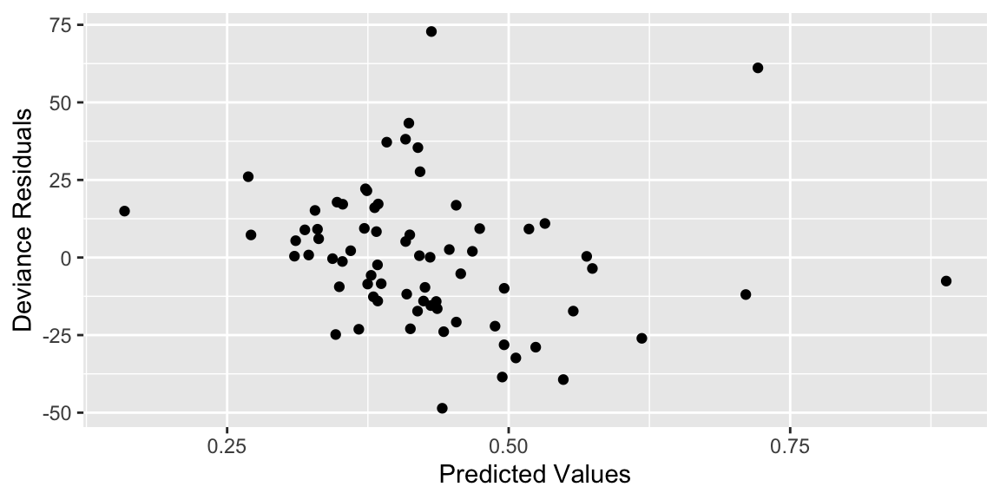

Chapter 7 Logistic Regression
Chapter 6 Learning Outcomes
State the assumptions associated with a binomial logistic regression model and determine whether the assumptions are satisfied.
Calculate probabilities and odds and expected changes associated with fixed effects in a binomial logistic regression model.
Interpret fixed effect coefficients in a binomial logistic regression model.
Analyze data using a binomial logistic regression model and Zero-Inflated Poisson Model in R.
Interpret fixed effect coefficients in a Zero-Inflated Poisson model.
Explain the role of a link function in a generalized linear model and determine which link function(s) might be appropriate in a given model.
These notes provide a summary of Chapter 6 in Beyond Multiple Linear Regression by Roback and Legler. The dataset we work with is different than those in the text, but much of the code and analysis is based off the examples in the text. Github repository.
# Packages required for Chapter 6
library(gridExtra)
library(mnormt)
library(lme4)
library(knitr)
library(pander)
library(tidyverse)
library(gridExtra)
library(corrplot)7.1 Binomial Logistic Regression
In Stat 255, we learned about Logistic regression models for binary response data. Please review sections 8.1-8.3 in the Stat 255 notes prior to proceeding.
7.1.1 Binary Response Data
We can use logistic regression to model binary responses, such as whether or not a student person defaults on a credit card payment, as in the dataset below.
In this dataset, each row represents an individual with a single yes/no response.
## default student balance income
## 1 No No 729.5265 44361.625
## 2 No Yes 817.1804 12106.135
## 3 No No 1073.5492 31767.139
## 4 No No 529.2506 35704.494
## 5 No No 785.6559 38463.496
## 6 No Yes 919.5885 7491.5597.1.2 Binomial Response Data
We can also use logistic regression to model data where the rows represent the number of âsuccessesâ in a fixed number of trials.
For example:
- Number of games won by a sports team in a given number of games.
- Number of people who survive for at least 10 years after being diagnosed with a disease.
- Number of people who vote for a candidate in election our of total number of voters.
Weâll refer to this kind of regression as Binomial Logistic Regression, though the term logistic regression is used somewhat abmiguously and is sometimes applied to this context as well.
7.1.3 2020 Wisconsin Election Data
Weâll work with data on the 2020 presidential election in the state of Wisconsin. Each row of the dataset represents a county in Wisconsin. Variables include:
County- name of the county
Rvotes- number of votes for Republican candidate (Donald Trump)
Dvotes- number of votes for Democratic candidate (Joe Biden)
PctD- percentage of 2-party vote that went to Biden (i.e.ÂRvotes/(Rvotes+Dvotes))
College- percentage of residents with a college degree
Unemployment- unemployment rate
WhitePct- percentage of white residents
COVID_DeathRate- number of deaths from covid-19 per 100,000 residents
Income- median household income
All variables were recorded at the time of the election.
## # A tibble: 10 Ã 10
## ...1 County Rvotes Dvotes PctD College Unemployment WhitePct
## <dbl> <chr> <dbl> <dbl> <dbl> <dbl> <dbl> <dbl>
## 1 1 Adams County 7362 4329 37.0 12.4 5.2 93.8
## 2 2 Ashland County 3841 4801 55.6 21.1 4.8 83.8
## 3 3 Barron County 15803 9194 36.8 19.9 4 95.3
## 4 4 Bayfield County 4617 6147 57.1 30.5 5.6 85.4
## 5 5 Brown County 75871 65511 46.3 29.6 3.1 87.8
## 6 6 Buffalo County 4834 2860 37.2 17.9 4.2 97.3
## 7 7 Burnett County 6462 3569 35.6 20 5.3 91.5
## 8 8 Calumet County 18156 12116 40.0 28.7 2.8 94.7
## 9 9 Chippewa County 21317 13983 39.6 20.1 3.8 94.7
## 10 10 Clark County 10002 4524 31.1 11.5 3.3 97.1
## # â¹ 2 more variables: COVID_DeathRate <dbl>, Income <dbl>P1 <- ggplot(Wisconsin, aes(x=College, y=PctD, size=(Rvotes+Dvotes))) + geom_point() +
geom_text(data=Wisconsin %>% filter(County %in% c("Dane County", "Door County" , "Milwaukee County", "Menominee County", "Outagamie County", "Waukesha County")), aes(x=College, y=PctD, label=County, vjust=-1), size=3, color="red") +
xlab("Percent with College Degree") +
ylab("Percent Voting for Biden") + theme(legend.position="none")
P2 <- ggplot(Wisconsin, aes(x=Unemployment, y=PctD, size=(Rvotes+Dvotes))) + geom_point() +
geom_text(data=Wisconsin %>% filter(County %in% c("Dane County", "Door County" , "Milwaukee County", "Menominee County", "Outagamie County", "Waukesha County")), aes(x=Unemployment, y=PctD, label=County, vjust=-1), size=3, color="red") +
xlab("Unemployment Rate") +
ylab("Percent Voting for Biden") + theme(legend.position="none")
P3 <- ggplot(Wisconsin, aes(x=WhitePct, y=PctD, size=(Rvotes+Dvotes))) + geom_point() +
geom_text(data=Wisconsin %>% filter(County %in% c("Dane County", "Door County" , "Milwaukee County", "Menominee County", "Outagamie County", "Waukesha County")), aes(x=WhitePct, y=PctD, label=County, vjust=-1), size=3, color="red") +
xlab("Percent of Population White") +
ylab("Percent Voting for Biden") + theme(legend.position="none")
P4 <- ggplot(Wisconsin, aes(x=COVID_DeathRate, y=PctD, size=(Rvotes+Dvotes))) + geom_point() +
geom_text(data=Wisconsin %>% filter(County %in% c("Dane County", "Door County" , "Milwaukee County", "Menominee County", "Outagamie County", "Waukesha County")), aes(x=COVID_DeathRate, y=PctD, label=County, vjust=-1), size=3, color="red") +
xlab("Covid Deaths Per 100k") +
ylab("Percent Voting for Biden") + theme(legend.position="none")
P5 <- ggplot(Wisconsin, aes(x=Income, y=PctD, size=(Rvotes+Dvotes))) + geom_point() +
geom_text(data=Wisconsin %>% filter(County %in% c("Dane County", "Door County" , "Milwaukee County", "Menominee County", "Outagamie County", "Waukesha County")), aes(x=Income, y=PctD, label=County, vjust=-1), size=3, color="red") +
xlab("Median Income") +
ylab("Percent Voting for Biden") + theme(legend.position="none")
grid.arrange(P1, P2, P3, P4, P5, nrow=3) + theme(legend.position="none")
## NULL7.1.4 Correlation Between Explanatory Variables
select <- dplyr::select
C <- cor(Wisconsin %>% select("College", "Unemployment", "WhitePct", "COVID_DeathRate", "Income"))
P <- corrplot(C, method="number")
While there is some correlation between the explanatory variables, none of the correlations are strong enough to raise concerns about multicollinearity, so weâll use all of them in our model.
7.1.5 Modeling Number of Votes
Suppose we know the total number of votes in a county and the probability of a single voter choosing Biden.
Since the response is a count, we might think to use a Poisson distribution. However, a Poisson distribution does not place an upper bound on the number of votes a candidate could receive in a county. This is unrealistic since we know that in reality, a candidate will never be able to get more votes than the total number of voters.
7.1.6 The Binomial Distribution
A Binomial random variable is a discrete random variable that models the number of âsuccessesâ in a fixed number of independent trials. We let \(n\) represent the number of trials, and \(p\) represent the probability of success on any given trial.
Notation: \(Y\sim Binom(n,p)\), Â Â Probability Mass Function: \(\text{P}(Y=y) = {n\choose y}p^y(1-p)^{n-y}\) Â Â
For \(n = 4, p=0.6\),
\[ Pr(Y=0) = {4\choose 0}0.6^0(0.4)^{4} = 1(0.4)^4\approx(0.0256) \]
\[ Pr(Y=1) = {4\choose 1}0.6^1(0.4)^{3} = 4(.6)(0.4)^3\approx(0.1536) \]
\[ Pr(Y=2) = {4\choose 2}0.6^2(0.4)^{2} = 6(.6)^2(0.4)^2\approx(0.3456) \]
\[ Pr(Y=3) = {4\choose 3}0.6^3(0.4)^{1} = 4(.6)^3(0.4)^1\approx(0.3456) \]
\[ Pr(Y=4) = {4\choose 4}0.6^4(0.4)^{0} = 1(.6)^4(0.4)\approx(0.1296) \]
In a binomial distribution, the mean is \(np\),
and the variance is \(np(1-p)\).
A binomial distribution with \(n=1\) is called a Bernoulli Distribution, denoted \(Ber(p)\).
7.1.7 Binomial Distribution for \(n=4, p=0.6\)
df <- data.frame(x = 0:4, y = dbinom(0:4, size = 4, prob=0.6))
ggplot(df, aes(x = x, y = y)) + geom_bar(stat = "identity", col = "white", fill = "blue") +
scale_y_continuous(expand = c(0.01, 0)) + scale_x_continuous(breaks=(0:4)) + xlab("x") + ylab(expression(paste("p(x|", p, ")"))) + ggtitle("n=4, p=0.6") + theme_bw() +
theme(plot.title = element_text(size = rel(1.2), vjust = 1.5))
Mean = \(0.6 \times 4=2.4\)
Variance = \(4\times 0.6 \times 0.4=0.96\)
7.1.8 More Binomial Distributions
We plot binomial distributions with \(n=10\), \(p=0.25, 0.6, 0.9\)

7.1.9 Connecting Expected Response to Explatory Variables
set.seed(0)
dat <- tibble(x=runif(200, -5, 10),
p=exp(-2+1*x)/(1+exp(-2+1*x)),
y=rbinom(200, 1, p),
y2=.3408+.0901*x,
logit=log(p/(1-p)))
dat2 <- tibble(x = c(dat$x, dat$x),
y = c(dat$y2, dat$p),
`Regression model` = c(rep("linear", 200),
rep("logistic", 200)))
ggplot() +
geom_point(data = dat, aes(x, y)) +
geom_line(data = dat2, aes(x, y, linetype = `Regression model`)) + ylab("p")
Let \(p_i\) represent the probability that a voter in county \(i\) votes for Biden.
We want to connect \(p_i\) to our explanatory variables.
Assuming
\[p_i = \beta_0+\beta_1X_{1} + \ldots + \beta_pX_p\]
is a bad idea since \(p_1\) must stay between -1 and 1.
Weâll use a sigmoidal function of the form
\[p_i = \frac{e^{\beta_0+\beta_1X_{1} + \ldots + \beta_pX_p}}{1+e^{\beta_0+\beta_1X_{1} + \ldots + \beta_pX_p}}\]
Equivalently:
\[\text{log}\left(\frac{{p_i}}{{1-p_i}}\right) = \beta_0+\beta_1X_{1} + \ldots + \beta_pX_p \]
The function \(\text{log}\left(\frac{{p_i}}{{1-p_i}}\right)\) is called \(\text{logit}(p_i)\). So, we can say:
\[\text{logit}(p_i) = \beta_0+\beta_1X_{i1} + \ldots + \beta_pX_{ip}\]
The function \(f(p) = \text{logit}(p) = log\left(\frac{p}{1-p}\right)\) is the link function.
Note: we could use different functions that map the real numbers into the interval (0,1), but the logit function works well and is frequently used.
7.1.10 Odds and Odds Ratio
For an event with probability \(p\), the odds of the event occuring are \(\frac{p}{1-p}\)
For two events \(p_1\) and \(p_2\) the odds ratio is defined as \(\frac{\text{Odds of Event 1}}{\text{Odds of Event 1}} = \frac{\frac{p_1}{1-p_1}}{\frac{p_2}{1-p_2}}\)
7.1.11 Interpreting Regression Coefficients
Letâs suppose we have one explanatory variable \(x\), so
\[\text{logit}(p_i) = \frac{e^{\beta_0+\beta_1X_{1}}}{1+e^{\beta_0+\beta_1X_{1}}}, \]
Consider the odds ratio for a case \(j\) with explanatory variable \(x + 1\), compared to case \(i\) with explanatory variable \(x\).
That is \(\text{log}\left(\frac{p_i}{1-p_i}\right) = \beta_0+\beta_1x\), and \(\text{log}\left(\frac{p_j}{1-p_j}\right) = \beta_0+\beta_1(x+1)\).
\(\text{log}\left(\frac{\frac{p_j}{1-p_j}}{\frac{p_i}{1-p_i}}\right)=\text{log}\left(\frac{p_j}{1-p_j}\right)-\text{log}\left(\frac{p_i}{1-p_j}\right)=\beta_0+\beta_1(x+1)-(\beta_0+\beta_1(x))=\beta_1.\)
For each 1-unit increase in \(x\) the log of the odds ratio of success to failure is expected to multiply by a factor of \(\beta_1\).
For each 1-unit increase in \(x\) the odds ratio of success to failure is expected to multiply by a factor of \(e^{\beta_1}\).
For a categorical variable \(x_j\) the odds success to failure in category \(j\), are expected to be \(e^{\beta_1}\) times higher in category \(j\) than in the baseline category.
7.1.12 Binomial Logistic Regression Assumptions
A logistic regression model relies on the following assumptions:
- Binary Response The response variable is dichotomous (two possible responses) or the sum of dichotomous responses.
- Independence The observations must be independent of one another.
- Variance Structure By definition, the variance of a binomial random variable is \(np(1-p)\), so that variability is highest when \(p=.5\).
- Linearity The log of the odds ratio, \(\text{log}(\frac{p}{1-p}) = \text{logit}(p)\), must be a linear function of \(x\).
7.2 Model for Wisconsin Vote
7.2.1 An Initial Model
Weâll start by trying to model the relationship between number of votes for Biden and percentage of voters with a college degree.
M1 <- glm(cbind(Dvotes, Rvotes) ~ College , family = binomial(link="logit"), data = Wisconsin)
summary(M1)##
## Call:
## glm(formula = cbind(Dvotes, Rvotes) ~ College, family = binomial(link = "logit"),
## data = Wisconsin)
##
## Coefficients:
## Estimate Std. Error z value Pr(>|z|)
## (Intercept) -0.9521859 0.0035941 -264.9 <0.0000000000000002 ***
## College 0.0319564 0.0001136 281.4 <0.0000000000000002 ***
## ---
## Signif. codes: 0 '***' 0.001 '**' 0.01 '*' 0.05 '.' 0.1 ' ' 1
##
## (Dispersion parameter for binomial family taken to be 1)
##
## Null deviance: 277052 on 71 degrees of freedom
## Residual deviance: 194994 on 70 degrees of freedom
## AIC: 195751
##
## Number of Fisher Scoring iterations: 4For each one percent increase in college education, the odds of voting for Biden are expected to multiply by a factor of \(e^{0.0320}=1.0325\) (a 3% increase).
In a county where 25% of the population has a college degree, the probability of an individual voter voting for Biden is \[\frac{e^{-0.9521859 + 0.0319564\times25}}{1+ e^{ (-0.9521859 + 0.0319564\times25)}}=0.4618\]
In a county where 35% of the population has a college degree, the probability of an individual voter voting for Biden is
\[\frac{e^{-0.9521859 + 0.0319564\times35}}{1 + e^{ (-0.9521859 + 0.0319564\times35)}}=0.5415\]
7.2.2 Checking Linearity Assumption
The model assumes that \(\text{log}\left(\frac{p}{1-p}\right) = \text{logit}(p)\) is a linear function of \(x\). To check this, we calculate \(\hat{p}_i\) for each county and plot \(\text{log}\left(\frac{\hat{p}_i}{1-\hat{p_i}}\right)\) against percentage of college graduates.
phat <- with(Wisconsin, (Dvotes)/(Dvotes+Rvotes))
Wisconsin$elogit <- log(phat/(1-phat))
## Plots
ggplot(Wisconsin, aes(x=College, y=elogit))+
geom_point(shape=1) + # Use hollow circles
geom_smooth(method=lm, # Add linear regression line
se=FALSE) + # Don't add shaded confidence region
xlab("College") + ylab("empirical logits") +
labs(title="Wisconsin Vote Empirical logits by College Pct.")7.2.3 Overdispersion in Binomial Counts
The binomial model assumes that the variance is equal to \(np(1-p)\). Checking this using graphs or tables is challenging, since it involves both \(n\) and \(p\), but we can group together counties with similar \(n\) and similar percentages of college graduates (hence similar \(p\)), and calculate variance in each group.
summarize <- dplyr::summarize
Wisconsin <- Wisconsin %>% mutate(TotalVotes = Dvotes+Rvotes)
EdCuts = cut(Wisconsin$College,
breaks=c(10,20,30,40,50,60))
PopCuts = cut(Wisconsin$TotalVotes,
breaks=c(seq(from=0, to =100000, by=10000), 500000))
WisconsinCuts <- data.frame(EdCuts, PopCuts, Wisconsin)
WisconsinGrps <- WisconsinCuts %>% group_by(EdCuts, PopCuts) %>%
summarize(NCounties = n(),
phat = sum(Dvotes)/sum(TotalVotes),
mean_n = mean(TotalVotes),
Theoretical_Variance = mean_n*phat*(1-phat),
Obs_Var = var(Dvotes)) %>%
arrange(desc(NCounties))
WisconsinGrps ## # A tibble: 24 Ã 7
## # Groups: EdCuts [5]
## EdCuts PopCuts NCounties phat mean_n Theoretical_Variance Obs_Var
## <fct> <fct> <int> <dbl> <dbl> <dbl> <dbl>
## 1 (10,20] (0,1e+04] 12 0.394 6359. 1518. 1233845.
## 2 (10,20] (1e+04,2e+04] 12 0.351 12366. 2817. 1137954.
## 3 (20,30] (2e+04,3e+04] 7 0.448 23677 5855. 1662284
## 4 (10,20] (2e+04,3e+04] 6 0.338 23962. 5359. 1454543.
## 5 (20,30] (1e+04,2e+04] 5 0.453 13037. 3231. 3059893.
## 6 (20,30] (3e+04,4e+04] 4 0.451 33628. 8325. 6968112.
## 7 (20,30] (1e+05,5e+05] 3 0.464 117357. 29187. 93383717.
## 8 (10,20] (4e+04,5e+04] 2 0.362 45874. 10589. 106722
## 9 (20,30] (4e+04,5e+04] 2 0.413 43892. 10642. 6262260.
## 10 (20,30] (5e+04,6e+04] 2 0.384 56491 13362. 2422200.
## # â¹ 14 more rowsIn the groups where there are enough counties to compare, the observed variance in counts appears to be much higher than the binomial model assumes.
The data are heavily overdispersed.
7.2.4 Residuals for Binomial Logistic Regression
We examine two kinds of residuals that are similar to those we saw in Poisson regression.
Pearson Residual:
\[ \begin{equation*} \textrm{Pearson residual}_i = \frac{\textrm{actual count}-\textrm{predicted count}}{\textrm{SD of count}} = \frac{Y_i-m_i\hat{p_i}}{\sqrt{m_i\hat{p_i}(1-\hat{p_i})}} \end{equation*} \]
where \(m_i\) is the number of trials for the \(i^{th}\) observation and \(\hat{p}_i\) is the estimated probability of success for that same observation.
Deviance Residual: \[ \begin{equation*} \textrm{d}_i = \textrm{sign}(Y_i-m_i\hat{p_i})\sqrt{2[Y_i \log\left(\frac{Y_i}{m_i \hat{p_i}}\right)+ (m_i - Y_i) \log\left(\frac{m_i - Y_i}{m_i - m_i \hat{p_i}}\right)]} \end{equation*} \]
When the number of trials is large for all of the observations and the models are appropriate, both sets of residuals should follow a standard normal distribution.
7.2.5 Quasi-Binomial Model
Like in Poisson regression, we can address overdispersion by fitting quasi-binomial model that estimates a dispersion parameter \(\hat{\phi}=\frac{\sum(\textrm{Pearson residuals})^2}{n-p}\) and multiplies standard error by \(\sqrt{\phi}\).
M1b <- glm(cbind(Dvotes, Rvotes) ~ College , family = quasibinomial(link="logit"), data = Wisconsin)
summary(M1b)##
## Call:
## glm(formula = cbind(Dvotes, Rvotes) ~ College, family = quasibinomial(link = "logit"),
## data = Wisconsin)
##
## Coefficients:
## Estimate Std. Error t value Pr(>|t|)
## (Intercept) -0.952186 0.188929 -5.040 0.00000350 ***
## College 0.031956 0.005969 5.353 0.00000104 ***
## ---
## Signif. codes: 0 '***' 0.001 '**' 0.01 '*' 0.05 '.' 0.1 ' ' 1
##
## (Dispersion parameter for quasibinomial family taken to be 2763.213)
##
## Null deviance: 277052 on 71 degrees of freedom
## Residual deviance: 194994 on 70 degrees of freedom
## AIC: NA
##
## Number of Fisher Scoring iterations: 4The estimate of the dispersion parameter \(\hat{\phi} = 2763\) is large.
- Standard errors increase considerably.
- The t-statistics associated with the quasi-binomial model are much smaller the z-statistics associated with the binomial model.
- The p-values are bigger, but still small enough to provide evidence of a relationship between college education and voting for Biden.
7.2.6 Model with All Explanatory Variables
M2 <- glm(cbind(Dvotes, Rvotes) ~ College + Unemployment + WhitePct + COVID_DeathRate + Income , family = quasibinomial(link="logit"), data = Wisconsin)
summary(M2)##
## Call:
## glm(formula = cbind(Dvotes, Rvotes) ~ College + Unemployment +
## WhitePct + COVID_DeathRate + Income, family = quasibinomial(link = "logit"),
## data = Wisconsin)
##
## Coefficients:
## Estimate Std. Error t value Pr(>|t|)
## (Intercept) 4.009188399 0.580255296 6.909 0.0000000023471 ***
## College 0.046311576 0.005900290 7.849 0.0000000000493 ***
## Unemployment -0.110233627 0.060376843 -1.826 0.0724 .
## WhitePct -0.029353000 0.004832728 -6.074 0.0000000690197 ***
## COVID_DeathRate -0.006583959 0.001535600 -4.288 0.0000601756542 ***
## Income -0.000033277 0.000004613 -7.214 0.0000000006729 ***
## ---
## Signif. codes: 0 '***' 0.001 '**' 0.01 '*' 0.05 '.' 0.1 ' ' 1
##
## (Dispersion parameter for quasibinomial family taken to be 527.7059)
##
## Null deviance: 277052 on 71 degrees of freedom
## Residual deviance: 34757 on 66 degrees of freedom
## AIC: NA
##
## Number of Fisher Scoring iterations: 3For each one percentage point increase in college education odds of voting for Biden are estimated to multiply by \(e^{0.0463} = 1.047\) ( a 5% increase), assuming all other variables are held constant.
For each one percentage point increase in unemployment rate, odds of voting for Biden is estimated to multiply by \(e^{-0.1102} = 0.8957\) (a 10% decrease), assuming all other variables are held constant.
For each one percentage point increase in white residents, odds of voting for Biden is estimated to multiply by \(e^{-0.02935} = 0.97\) (a 3% decrease), assuming all other variables are held constant.
For each one death increase per 100k residents, odds of voting for Biden is estimated to multiply by \(e^{-0.006584} = 0.993\) (a 0.7% decrease), assuming all other variables are held constant.
For each 1000 dollar increase in median income, odds of voting for Biden is estimated to multiply by \(e^{-0.0000328\times1000} = 0.968\) (a 3% decrease), assuming all other variables are held constant.
7.2.7 Tests for Significance of Model Coefficients
Wald test statistics and p-values for all variables provide evidence of relationships between these variables and percentage voting for Biden.
This is not surprising since the sample size is very large. In fact, confidence intervals and hypothesis tests donât really make sense to talk about here, because we have the whole population of Wisconsin voters in 2020. Weâre not trying to generalize from a sample to a population.
The model estimates still make sense, and are informative, so we should base our conclusions on percentage change estimates given on the previous slide.
7.2.8 Drop in Deviance Test
We could perform a drop-in-deviance test to compare our two models so far.
Analysis of Deviance Table
Model 1: cbind(Dvotes, Rvotes) ~ College
Model 2: cbind(Dvotes, Rvotes) ~ College + Unemployment + WhitePct + COVID_DeathRate +
Income
Resid. Df Resid. Dev Df Deviance F Pr(>F)
1 70 194994
2 66 34757 4 160237 75.912 < 0.00000000000000022 ***
---
Signif. codes: 0 '***' 0.001 '**' 0.01 '*' 0.05 '.' 0.1 ' ' 1We see a large drop in residual deviance, providing strong evidence that the larger model is prefered. In this case, that makes sense, since it contains variables we expect to be helpful.
When we have very large sample sizes weâll get small p-values even when the new variables donât make a practical difference. So we should not base model choices on p-values alone, but should look at confidence intervals and measures of the size of the effect associated with each variable.
7.2.9 Deviance Residual Plot
We plot deviance residuals against the predicted values and against our explanatory variables to test for lack of fit.


7.2.10 LLSR vs Binomial Logistic Regression
\[\begin{gather*} \underline{\textrm{Response}} \\ \mathbf{LLSR:}\textrm{ normal} \\ \mathbf{Binomial\ Regression:}\textrm{ number of successes in n trials} \\ \textrm{ } \\ \underline{\textrm{Variance}} \\ \mathbf{LLSR:}\textrm{ equal for each level of}\ X \\ \mathbf{Binomial\ Regression:}\ np(1-p)\textrm{ for each level of}\ X \\ \textrm{ } \\ \underline{\textrm{Model Fitting}} \\ \mathbf{LLSR:}\ \mu=\beta_0+\beta_1x \textrm{ using Least Squares}\\ \mathbf{Binomial\ Regression:}\ \log\left(\frac{p}{1-p}\right)=\beta_0+\beta_1x \textrm{ using Maximum Likelihood}\\ \textrm{ } \\ \underline{\textrm{EDA}} \\ \mathbf{LLSR:}\textrm{ plot $X$ vs. $Y$; add line} \\ \mathbf{Binomial\ Regression:}\textrm{ find $\log(\textrm{odds})$ for several subgroups; plot vs. $X$} \\ \end{gather*}\]
\[\begin{gather*} \underline{\textrm{Comparing Models}} \\ \mathbf{LLSR:}\textrm{ extra sum of squares F-tests; AIC/BIC} \\ \mathbf{Binomial\ Regression:}\textrm{ drop-in-deviance tests; AIC/BIC} \\ \textrm{ } \\ \underline{\textrm{Interpreting Coefficients}} \\ \mathbf{LLSR:}\ \beta_1=\textrm{ change in mean response for unit change in $X$} \\ \mathbf{Binomial\ Regression:}\ e^{\beta_1}=\textrm{ percent change in odds for unit change in $X$} \end{gather*}\]
7.3 Maximum Likelihood Estimation
7.3.1 Parameter Estimation
Recall that in ordinarly least squares regression, the estimates \(b_1, b_2, \ldots, b_p\) of regression coefficients \(\beta_1, \beta_2, \ldots \beta_p\) are chosen in a way that minimizes \(\displaystyle\sum_{i=1}^n(y_i-\hat{y_i})^2=\displaystyle\sum_{i=1}^n(y_i-(b_0+b_1x_{i1}+\ldots b_px_{ip}))^2\).
The validity of the least-squares regression process depends on the assumptions associated with a LLSR model, making it inappropriate for the kinds of models weâve seen in this class (mixed effects models, generalized linear models, etc.). Instead, we use a process called maximum likelihood estimation.
In fact, in an ordinary LLSR model, it can be shown that maximum likelihood estimation would produce the same estimates as least squares estimation.
In this section, weâll work through a simple example to illustrate how maximum likelihood works in a logistic regression model.
7.3.2 Steph Curry 3-Point Shooting
Stephen Curry of the Golden State Warriors is widely considered to be the best 3-point shooter in the NBA. So far during the current 2021-22 NBA season, Curry has made 251 out of 663 attempted 3 point shots (37.9%).
When playing at home, he has made 150 out of 397 3-point shots (37.8%).
When playing away, he has made 101 out of 266 4-point shots (38.0%).
Weâll use a logistic regression model to estimate the probability of Curry making a shot at home or away and test whether there is evidence of differences in his shooting based on location.
7.3.3 Model for Curryâs Shooting
Weâll start with a very simple intercept-only model. This model assumes that Curry has a constant probability of success on any shot (\(p\)), which is the same, regardless of where he is playing.
Our goal is to estimate \(p\) and to find a confidence interval for the range \(p\) could plausibly lie in.
7.3.4 Likelihood Function
A likelihood function is a function that tells us how likely we are to observe our data for a given parameter value.
Let \(p\) represent the probability of a made basket.
Since the shots are independent, we can write the Likelihood function for Curryâs shots as:
\[Lik(p) \propto p^{\text{#Makes}}(1-p)^{\text{#Misses}} = (p)^{251}(1-p)^{412}\]
If our goal is just to esimate \(p\), we could simply find the value of \(p\) that maximizes this function. Such a value is called a maximum likelihood estimate.
7.3.5 Plotting Likelihood Function
options( scipen = 0 )
library(ggplot2)
p=seq(0,1,length=1001)
lik=p^251 * (1-p)^(663-251) # likelihood of getting observed data
df <- data.frame(p,lik)
plot<- ggplot(data=df,aes(x=p, y=lik)) +
geom_line(color="blue", size=2) +
xlab("possible values of p") + ylab("Likelihood") +
labs(title="Likelihood function for Curry's shots")
plot + xlim(c(0, 1))
It looks like the most likely value of \(p\) is around 0.4.
Weâll write a function in R to calculate the value of \(p\) that maximizes the function.
7.3.6 Numerical Maximization
Lik.f <- function(nbasket,nmissed,nGrid){
p <- seq(0, 1, length = nGrid) # create nGrid values of p between 0 and 1
lik <- p^{nbasket} * (1 - p)^{nmissed} # calculate value of lik at each p
return(p[lik==max(lik)]) # find and return the value of p that maximizes the likelihood function
}## [1] 0.3785379The maximum likelihood estimate is \(\hat{p} = 0.3785\).
In fact, this is equal to 251/663. In this case, the MLE is consistent with our intuition.
7.3.7 MLE Using Calculus
We can also use calculus to find the value of \(p\) that maximizes the function \(\text{lik}(p)\).
In fact, it is usually easier to maximize the log of this function. We can do this since log is a non-decreasing function, ensuring that the value that maximizes \(\text{log}(\text{lik}(p))\) will also maximize \(\text{lik}(p)\).
\[ \begin{align*} \text{lik}(p) &= p^{251}(1-p)^{412} \\ \text{log}(\text{lik}(p)) &= 251\log(p)+412\log(1-p) \\ \frac{d}{dp} \log(\text{lik}(p)) &= \frac{251}{p} - \frac{412}{1-p} = 0 \end{align*} \]
and
\[ \frac{251}{p} = \frac{412}{1-p} \implies 251(1-p)=412p\implies p=\frac{251}{251+412}\approx0.3785 \]
7.3.8 Likelihood in a Logistic Regression Model
In a logistic regression model, we donât try to estimate \(p\) directly, but rather to estimate \(\beta_0, \beta_1, \beta_p\), which are then used to calculate \(p\)
In our simple intercept only example,
\[p = \frac{e^{\beta_0}}{1+e^{\beta_0}}\]
and we need to estimate \(\beta_0\).
After removing constants, the new likelihood looks like:
\[ \begin{equation*} \begin{gathered} Lik(\beta_0) \propto \\ \left( \frac{e^{\beta_0}}{1+e^{\beta_0}}\right)^{251}\left(1- \frac{e^{\beta_0}}{1+e^{\beta_0}}\right)^{412} \end{gathered} \end{equation*} \]
7.3.9 Plot of Likelihood Function
library(ggplot2)
b=seq(-1,1,length=1001)
lik= (exp(b)/(1+exp(b)))^251*(1-(exp(b)/(1+exp(b))))^(412) # likelihood of getting observed data
df <- data.frame(b,lik)
plot<- ggplot(data=df,aes(x=b, y=lik)) +
geom_line(color="blue", size=2) +
xlab("possible values of beta_0") + ylab("Likelihood") +
labs(title="Likelihood function for Curry's shots")
plot + xlim(c(-1, 1))
7.3.10 Numerical Maximization
Lik.f_logistic <- function(nbasket,nmissed,nGrid){
b <- seq(-1, 1, length = nGrid) # create values between -1 and 1 at which to evaluate the function
lik <- (exp(b)/(1+exp(b)))^nbasket*(1-(exp(b)/(1+exp(b))))^nmissed # calculate values at each b
return(b[lik==max(lik)]) # find and return value of b that maximizes the function
}## [1] -0.4955496Our estimate is \(b_0 = -0.4955\).
From this we can calculate \[\hat{p} = \frac{e^{-0.4955}}{1+e^{-0.4955}}\approx0.3785\]
7.3.11 Comparison to R Output
Location <- c("Home", "Away")
Makes <- c(150, 101)
Misses <- c(247, 165)
Curry <- data.frame(Location, Makes, Misses)
head(Curry)## Location Makes Misses
## 1 Home 150 247
## 2 Away 101 165##
## Call:
## glm(formula = cbind(Makes, Misses) ~ 1, family = binomial(link = "logit"),
## data = Curry)
##
## Coefficients:
## Estimate Std. Error z value Pr(>|z|)
## (Intercept) -0.49557 0.08007 -6.189 6.05e-10 ***
## ---
## Signif. codes: 0 '***' 0.001 '**' 0.01 '*' 0.05 '.' 0.1 ' ' 1
##
## (Dispersion parameter for binomial family taken to be 1)
##
## Null deviance: 0.0023559 on 1 degrees of freedom
## Residual deviance: 0.0023559 on 1 degrees of freedom
## AIC: 14.355
##
## Number of Fisher Scoring iterations: 2Note that the estimates differ in the 5th decimal place due to issues with numerical approximation. We could get a more precise approximation by increasing the number of points in our grid search.
We could maximize this function using calculus, which is more involved, but still doable in this case. Calculus-based methods typically do not work for more complicated likelihood methods involving more than one parameter, so we usually rely on numerical approximation methods.
7.3.12 Model for Home/Away
Now letâs build a model that allows Curryâs probability of making a shot to differ for away games, compared to home games.
Recall that Curry made 150 out of 397 shots at home and 101 out of 265 away.
Let \(p_H\) represent the probability of making a shot at home and \(p_A\) represent the probability of making a shot in an away game.
We can write the likelihood function as:
\[Lik(p_H, p_A) \propto p_H^{150}(1-p_H)^{247} p_A^{101}(1-p_A)^{165}\]
Our interest centers on estimating \(\hat{\beta_0}\) and \(\hat{\beta_1}\), not \(p_1\) or \(p_0\). So we replace \(p_1\) in the likelihood with an expression for \(p_1\) in terms of \(\beta_0\) and \(\beta_1\). Recall
\[p_i = \frac{e^{\beta_0+\beta_1\text{Home}}}{1+e^{\beta_0+\beta_1\text{Home}}}\]
After removing constants, the new likelihood looks like:
\[ \begin{equation*} \begin{gathered} Lik(\beta_0,\beta_1) \propto \\ \left( \frac{e^{\beta_0+\beta_1}}{1+e^{\beta_0+\beta_1}}\right)^{150}\left(1- \frac{e^{\beta_0+\beta_1}}{1+e^{\beta_0+\beta_1}}\right)^{247} \left(\frac{e^{\beta_0}}{1+e^{\beta_0}}\right)^{101}\left(1-\frac{e^{\beta_0}}{1+e^{\beta_0}}\right)^{165} \end{gathered} \end{equation*} \]
7.3.13 Numerical Optimization
Lik.f_logistic2 <- function(nbasketH,nmissedH,nbasketA,nmissedA,nGrid){
b0 <- seq(-1, 1, length = nGrid) # values of b0
b1 <- seq(-1, 1, length=nGrid) # values of b1
B <- expand.grid(b0, b1) # create all combinations of b0 and b1
names(B) <- c("b0", "b1") # give B the right names
B <- B %>% mutate(Lik = (exp(b0+b1)/(1+exp(b0+b1)))^nbasketH*(1-(exp(b0+b1)/(1+exp(b0+b1))))^nmissedH*
(exp(b0)/(1+exp(b0)))^nbasketA*(1-(exp(b0)/(1+exp(b0))))^nmissedA) #evaluate function
return(B[B$Lik==max(B$Lik),]) # find and return combination of b0 and b1 that maximize B.
}## b0 b1 Lik
## 496255 -0.4914915 -0.007007007 9.835399e-192Although we have worked with the likelihood function here, it is more common to work with the log of the likelihood function. Notice that the maximized log likelihood is very small, which can create numerical instability, though it doesnât here.
7.3.14 Comparison to R Output
M <- glm(data = Curry, cbind(Makes, Misses) ~ Location , family = binomial(link="logit"))
summary(M)##
## Call:
## glm(formula = cbind(Makes, Misses) ~ Location, family = binomial(link = "logit"),
## data = Curry)
##
## Coefficients:
## Estimate Std. Error z value Pr(>|z|)
## (Intercept) -0.490825 0.126339 -3.885 0.000102 ***
## LocationHome -0.007928 0.163330 -0.049 0.961286
## ---
## Signif. codes: 0 '***' 0.001 '**' 0.01 '*' 0.05 '.' 0.1 ' ' 1
##
## (Dispersion parameter for binomial family taken to be 1)
##
## Null deviance: 2.3559e-03 on 1 degrees of freedom
## Residual deviance: -4.2188e-15 on 0 degrees of freedom
## AIC: 16.353
##
## Number of Fisher Scoring iterations: 2The estimates are close to those that we obtained. We can make them closer by using a finer grid search.
7.3.15 Applications of Likelihood
Likelihood is at the heart of many of the model comparison tests weâve worked with in this class.
Likelihood Ratio Tests
The ANOVA-type tests of reduced vs full models use likelihoods to calculate the improvement in fit, associated with adding additional variables to the model.
Our test statistic is
\[\begin{equation*} \begin{split} \textrm{LRT} &= 2[\max(\log(Lik(\textrm{larger model}))) - \max(\log(Lik(\textrm{reduced model})))] \\ &= 2\log\left(\frac{\max(Lik(\textrm{larger model}))}{\max(Lik(\textrm{reduced model}))} \right) \end{split} \end{equation*}\]
Statistical theory tells us that this statistic follows \(\chi^2\) distribution with the difference in number of parameters as its degrees of freedom.
In fact, it can be shown that the drop-in-deviance tests weâve used for Poisson and logistic regression are special cases of this likelihood ratio test.
AIC and BIC
AIC and BIC are also calculated using the likelihood function.
\(\textrm{AIC} = -2 (\textrm{maximum log-likelihood }) + 2p\), where \(p\) represents the number of parameters in the fitted model. AIC stands for Akaike Information Criterion. Because smaller AICs imply better models, we can think of the second term as a penalty for model complexityâthe more variables we use, the larger the AIC.
\(\textrm{BIC} = -2 (\textrm{maximum log-likelihood }) + p\log(n)\), where \(p\) is the number of parameters and \(n\) is the number of observations. BIC stands for Bayesian Information Criterion, also known as Schwarzâs Bayesian criterion (SBC).
7.3.16 Summary Maximum Likelihood Estimation
Maximum likelihood estimation is widely used to estimate parameters in many different kinds of statistical models
In LLSR, MLE and least-squares procedures yield the same estimates
Although they can be determined graphically, or using calculus in simple situations, MLEâs are usually approximated using numerical methods
Itâs usually best, for reasons of numerical stability, to maximize the log of the likelihood function, rather than the likelihood function itself
In this section, we looked at a couple simple examples in logistic regression, but MLEâs are used in all of the models weâve seen in this course (mixed effects, Poisson regression, etc.) and many more. It is the go-to technique for parameter estimation in classical frequentist statistics (which probably includes all statistics youâve studied so far)
Maximum Likelihood estimation is taught in much more mathematical detail in STAT 445.
An alternative approach to Maximium Likelihood Estimation is Bayesian Estimation, which is taught in STAT 450
7.4 Zero-Inflated Poisson Model
7.4.1 Case Study: Weekend Drinking
Students in an introductory statistics class at a large university were asked:
âHow many alcoholic drinks did you consume last weekend?â.
This survey was conducted on a dry campus where no alcohol is officially allowed, even among students of drinking age, so we expect that some portion of the respondents never drink. The purpose of this survey is to explore factors related to drinking behavior on a dry campus.
#Getting started-weekenddrinks
# File: weekendDrinks
drinks <- read.csv("https://raw.githubusercontent.com/proback/BeyondMLR/master/data/weekendDrinks.csv")
drinks <- drinks %>%
mutate(off.campus=ifelse(dorm=="off campus",1,0),
firstYear=dorm%in%c("kildahl","mohn","kittlesby")) %>% select(-c(dorm))
head(drinks)## drinks sex off.campus firstYear
## 1 0 f 0 TRUE
## 2 5 f 0 FALSE
## 3 10 m 0 FALSE
## 4 0 f 0 FALSE
## 5 0 m 0 FALSE
## 6 3 f 0 FALSE7.4.2 Questions of Interest
- What proportion of students on this dry campus never drink?
- Do upper class students drink more than first years?
- What factors, such as off-campus living and sex, are related to whether students drink?
- Among those who do drink, to what extent is moving off campus associated with the number of drinks in a weekend?
- It is commonly assumed that malesâ alcohol consumption is greater than femalesâ; is this true on this campus?
7.4.3 Distribution of Number of Drinks

drinks %>% group_by(firstYear) %>% summarize(mean_drinks=mean(drinks),
prop_zero = mean(drinks==0),
n=n())## # A tibble: 2 Ã 4
## firstYear mean_drinks prop_zero n
## <lgl> <dbl> <dbl> <int>
## 1 FALSE 2.41 0.407 59
## 2 TRUE 0.722 0.667 187.4.4 Number of Drinks Comparisons
p1 <- ggplot(data = drinks) +
geom_histogram(mapping = aes(x = drinks)) + facet_wrap(~firstYear, nrow=2) +
ggtitle("Drinking by First Year Status")
p2 <- ggplot(data = drinks) +
geom_histogram(mapping = aes(x = drinks)) + facet_wrap(~sex, nrow=2) +
ggtitle("Drinks by Sex")
p3 <- ggplot(data = drinks) +
geom_histogram(mapping = aes(x = drinks)) + facet_wrap(~off.campus, nrow=2) +
ggtitle("Drinking by On/Off Campus")
grid.arrange(p1, p2, p3, nrow=1)
7.4.5 Proportion of Drinkers
Now, we compare proportions of students who reported drinking any drinks.
Drinks by First-Year Status:
p1 <- ggplot(data = drinks) +
stat_count(mapping = aes(x = firstYear, fill=drinks>0), position="fill" ) +
ggtitle("Drinking by First Year Status")
p2 <- ggplot(data = drinks) +
stat_count(mapping = aes(x = sex, fill=drinks>0), position="fill" ) +
ggtitle("Drinking by Sex")
p3 <- ggplot(data = drinks) +
stat_count(mapping = aes(x = off.campus, fill=drinks>0), position="fill" ) +
ggtitle("Drinking by On/Off Campus")
grid.arrange(p1, p2, p3, nrow=3)
7.4.6 Modeling Drinks
A Poisson distribution seems like a good choice for modeling drinks, since they are a count, and there is no fixed number of âattemptsâ, as in a binomial distribution.
Expected Proportion of Zeros:
## [1] 0.08981529## [1] 0.4867523The proportion of zeros in our data is much higher than expected under a Poisson model with means equal to those observed in the data. (0.41 compared to 0.09 for upperclass students and 0.67, compared to 0.49 for first-years).
7.4.7 Explaining the Large Number of Zeros
The students who reported 0 drinks will fall into one of two categories:
- Students who do not drink at all.
- Students who do drink, but did not drink last weekend.
Our data consist of a mixture of responses from these two different populations.
Among students who do drink, it is reasonable to model the number of drinks consumed on a given weekend using a Poisson distribution
Among students who do not drink at all, there is no need to model the number of drinks in a given weekend, since we know itâs zero.
Ideally, weâd like to sort out the non-drinkers and drinkers when performing our analysis.
Answering these questions would be a simple matter if we knew who was and was not a drinker in our sample. Unfortunately, the non-drinkers did not identify themselves as such, so we will need to use the data available with a model that allows us to estimate the proportion of drinkers and non-drinkers.
7.4.8 Zero-Inflated Poisson Model
Weâll fit the model in two steps:
- Estimate the probability that a person drinks at all, given information contained in the explanatory variables.
- Model the number of drinks consumed in a given weekend, assuming the person does drink at all.
In step 1, we use logistic regression to estimate \(p\), the probability that the person does not drink at all.
In step 2, we use a Poisson regression to estimate \(\lambda\), the expected number of drinks a person consumes, assumping they drink at all.
7.4.9 Developing the Zero-Inflated Poisson Model
Let
\[ \begin{cases} 1 & \text{if student i drinks at all} \\ 0 & \text{if student i does not drink} \end{cases} \]
First, we model \(D_i\):
\[D_i\sim\text{Ber}(p_i) \]
and then \(Y_{i}\)
\[ \begin{cases} Y_i\sim\text{Pois}(\lambda_i) & \text{if } D_i=1 \\ Y_i=0 & \text{if } D_i=0 \end{cases} \]
The variable \(D_i\) is called a latent variable. It is a variable that is relevant to the process we are interested in studying, but is not directly measured or reported in our data.
The Zero-Inflated Poisson is an example of a mixture model, as the response variable is modeled using a mixture of Bernoulli and Poisson distributions.
Let \(p_i\) represent \(P(D_i=0)\), the probability that person person does not drink.
7.4.10 Deriving the ZIP PMF
We derive the probability mass function for the Poisson model by considering the two different ways we can observe count \(y\).
\[ \begin{aligned} P(Y=0) &= P(\text{Person Doesn't Drink at All}) + P(\text{Person drinks and didn't drink last week})\\ & = P(\text{Person Doesn't Drink at All}) + P(\text{0 drinks in a given weekend given person drinks})P(\text{Person drinks}) \\ & = P(D_i=0) + P(Y_i=0|D_i=1)P(D_i=1) \\ & = p_i + \frac{\lambda_i^0e^{-\lambda_i}}{0!}(1-p) \\ & = p_i + e^{-\lambda_i}(1-p_i) \end{aligned} \]
For \(y\neq 0\),
\[ \begin{aligned} P(Y=y) &= P(\text{Person drinks and drinks y drinks in a weekend})\\ & = P(\text{y drinks in a given weekend given person drinks})P(\text{Person drinks}) \\ & = P(Y_i=y|D_i=1)P(D_i=1) \\ & = \frac{\lambda_i^ye^{-\lambda_i}}{y!}(1-p) \end{aligned} \]
Putting these together, we get the ZIP probability mass function:
\[ P(Y=y) = \begin{cases} p_i + e^{-\lambda_i}(1-p_i) & \text{if } y=0 \\ \frac{\lambda_i^ye^{-\lambda_i}}{y!}(1-p_i) & \text{if } y>0 \end{cases} \]
7.4.12 ZIP Model
We assume
\[ Y_i \sim\text{ZIP}(p_i, \lambda_i) \]
\(p_i\) represents the probability that student \(i\) drinks at all.
\(\lambda_i\) represents the average number of drinks student \(i\) consumes in a weekend, assuming they do drink at all.
We want to estimate \(p_i\) and \(\lambda_i\), using information contained in the explanatory variables.
We can use different explanatory variables to estimate \(p_i\) and \(\lambda_i\).
Let \(Z_{1}, Z_2, \ldots, Z_p'\) be the explanatory variables used to estimate \(p\), and \(X_1, X_2, \ldots, X_p\) be the explanatory variables used to estimate \(\lambda\)
We link \(p_i\) and \(\lambda_i\) to a linear combination of the explanatory variables, using the link functions:
\[ log(\lambda_i) = \beta_0+\beta_1X_{i1}+ \ldots +\beta_pX_{ip}, \]
\[ log\left(\frac{p_i}{1-p_i}\right) = \alpha_0+\alpha_1Z_{i1}+ \ldots +\alpha_pZ_{ip'}, \]
We obtain estimates of \(\beta_0, \ldots{\beta_p}\) and \(\alpha_0, \ldots, \alpha_p\), and from these obtain maximum likelihood etimates for \(p_i\) and \(\lambda_i\).
7.5 Model for Drinks Data
7.5.1 ZIP for Drinks Data
A zero-inflated Poisson regression model to take non-drinkers into account consists of two parts:
- One part models the association, among drinkers, between number of drinks and the predictors of sex and off-campus residence.
- The other part uses a predictor for first-year status to obtain an estimate of the proportion of non-drinkers based on the reported zeros.
The form for each part of the model follows. The first part looks like an ordinary Poisson regression model:
\[ log(\lambda_i)=\beta_0+\beta_1\textrm{off.campus}_i+ \beta_2\textrm{sex}_i \] where \(\lambda\) is the mean number of drinks in a weekend among those who drink. The second part has the form
\[ logit(p_i)=\alpha_0+\alpha_1\textrm{firstYear}_i \] where \(\alpha\) is the probability of being in the non-drinkers group and \(logit(p_i) = log( p_i/(1-p_i))\).
7.5.2 ZIP Model in R
We will use the R function zeroinfl from the package pscl to fit a ZIP model. The terms before the | are used to model expected number of drinks, assuming the person really does drink at all.
The terms after the | are used to estimate the probability that the person drinks at all.
Call:
zeroinfl(formula = drinks ~ off.campus + sex | firstYear, data = drinks)
Pearson residuals:
Min 1Q Median 3Q Max
-1.1118 -0.8858 -0.5290 0.6367 5.2996
Count model coefficients (poisson with log link):
Estimate Std. Error z value Pr(>|z|)
(Intercept) 0.7543 0.1440 5.238 1.62e-07 ***
off.campus 0.4159 0.2059 2.020 0.0433 *
sexm 1.0209 0.1752 5.827 5.63e-09 ***
Zero-inflation model coefficients (binomial with logit link):
Estimate Std. Error z value Pr(>|z|)
(Intercept) -0.6036 0.3114 -1.938 0.0526 .
firstYearTRUE 1.1364 0.6095 1.864 0.0623 .
---
Signif. codes: 0 '***' 0.001 '**' 0.01 '*' 0.05 '.' 0.1 ' ' 1
Number of iterations in BFGS optimization: 8
Log-likelihood: -140.8 on 5 Df## count_(Intercept) count_off.campus count_sexm zero_(Intercept)
## 2.1260699 1.5157953 2.7756910 0.5468311
## zero_firstYearTRUE
## 3.1154950Interpretations
For those who drink, the average number of drinks for males is \(e^{1.0209}\) or 2.76 times the number for females (Z = 5.827, p < 0.001) given that you are comparing people who live in comparable settings (on or off campus)
Among drinkers, the mean number of drinks for students living off campus is \(e^{0.4159}=1.52\) times that of students living on campus for those of the same sex (Z = 2.021, p = 0.0433).
The odds that a first-year student is a non-drinker are 3.12 times the odds that an upper-class student is a non-drinker.
The estimated probability that a first-year student is a non-drinker is
\[ \frac{e^{0.533}}{1+e^{0.533}} = 0.630 \]
or 63.0%, while for non-first-year students, the estimated probability of being a non-drinker is 0.354.
7.5.3 Residual Plot
Fitted values (\(\hat{y}\)) and residuals (\(y-\hat{y}\)) can be computed for zero-inflation models and plotted. Figure 7.1 reveals that one observation appears to be extreme (Y=22 drinks during the past weekend). Is this a legitimate observation or was there a transcribing error? Without the original respondents, we cannot settle this question. It might be worthwhile to get a sense of how influential this extreme observation is by removing Y=22 and refitting the model.
Figure 7.1: Residuals by fitted counts for ZIP model.
7.5.4 Limitations
There are several concerns and limitations we should think about related to this study.
What time period constitutes the âweekendâ?
What constitutes a drinkâa bottle of beer?
How many drinks will a respondent report for a bottle of wine?
There is also an issue related to confidentiality. If the data is collected in class, will the teacher be able to identify the respondent? Will respondents worry that a particular response will affect their grade in the class or lead to repercussions on a dry campus?
In addition to these concerns, there are a number of other limitations that should be noted. Following the concern of whether this data represents a random sample of any population (it doesnât), we also must be concerned with the size of this data set (77). ZIP models are not appropriate for small samples and this data set is not impressively large.
7.5.5 Final Thoughts on Zero-Inflated Models
At times, a mixture of zeros occurs naturally. It may not come about because of neglecting to ask a critical question on a survey, but the information about the subpopulation may simply not be ascertainable. For example, visitors from a state park were asked as they departed how many fish they caught, but those who report 0 could be either non-fishers or fishers who had bad luck. These kinds of circumstances occur often enough that ZIP models are becoming increasingly common.
Actually, applications which extend beyond ordinary Poisson regression applicationsâZIPs and other Poisson modeling approaches such as hurdle models and quasi-Poisson applicationsâare becoming increasingly common. So it is worth taking a look at these variations of Poisson regression models. Here we have only skimmed the surface of zero-inflated models, but we want you to be aware of models of this type. ZIP models demonstrate that modeling can be flexible and creativeâa theme we hope you will see throughout this book.